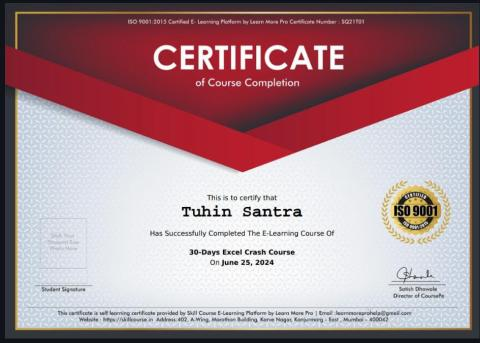

Hi, I'm Tuhin Santra
Analytically driven MBA graduate with a background in finance, passionate about transforming raw data into strategic business insights and growth opportunities using Power BI, Excel, SQL, and Python.

About Me
A quick summary of who I am and how I like to work with data.
I am an analytically driven MBA graduate with a strong foundation in finance and Data analytics. I enjoy transforming complex, unstructured data into meaningful insights that support strategic decision-making and drive business performance.
My recent work has ranged from building interactive Power BI dashboards and Excel models to developing a Python/Streamlit tool that helps non-technical users clean their own datasets. I like projects where analysis leads directly to a decision or an action.
Data Storytelling
Turning dense spreadsheets and dashboards into insights anyone can act on.
Dashboard Building
Designing clear, decision-ready dashboards in Power BI, Tableau & Google Data Studio.
Problem Solving
Adaptable team player who enjoys breaking down ambiguous business problems.
Financial Modeling
Designing robust financial models for budgeting, forecasting, valuation, and scenario analysis to drive informed decisions.
Skills & Tools
The languages, tools, and environments I use most.
Tech Languages
Data Cleaning
Analysis Environment
Data Visualization
Tech Skills
Soft Skills
Financial Analyst Skills
Work Experience
Where I've applied these skills professionally.
Market Research Analyst Intern
Cechoes Technology PVT. LTD.
Supported strategic decision-making by improving visibility into market and competitor trends and tracking key performance indicators.
- Analyzed market and competitor data to identify growth opportunities
- Transformed disconnected data into actionable insights for leadership
- Tracked KPIs and presented findings to support financial forecasting & ROI evaluation
Education & Certifications
My academic background and completed certifications.
Education
PGP + MBA — Business Analytics & Data Science
Bengal Institute of Business Studies – Vidyasagar University
69%B.Com — Accounting & Finance
K.D. College of Commerce & General Studies
70%W.B.C.H.S.E — Commerce (H.S)
Debra Uchchatara Madhyamik Vidyalaya
71%W.B.B.S.E (Secondary Examination)
Arjuni High School
60%Certifications
Business Analytics and Data Science — 2026
IBM
Learned business analytics, data visualization, and data-driven decision-making using industry-standard tools.
View Certificate ↗Data Science, Responsible AI, and Cyber Security — 2026
WEBEL
Learned data science fundamentals, ethical AI practices, and cyber security concepts through six months of industry-focused training.
Click to view certificate ↻Machine Learning with Python — 2025
IIT Kanpur
Gained foundational machine learning concepts using Python.
View Certificate ↗Advanced Excel with Power BI — 2025
IIT Kanpur
Gained skills in data analysis and visualization for effective decision-making.
View Certificate ↗Excel Crash Course — 2024
Skill Course
Learned complex data analysis using PivotTables and VLOOKUP.
Click to view certificate ↻
assets/certificate/excel-crash-course.jpg
Financial Accounting with Tally Prime & GST — 2024
TATA Strive / ICA
Learned financial accounting fundamentals using Tally Prime, including GST compliance.
Click to view certificate ↻Projects
Browse by category — just like flipping between sheet tabs in a workbook. Click any project to view its embed, PDF, or image in full.
Get In Touch
Have a project, internship, or role in mind? Fill out the form or reach me directly.
Prefer a quick form?
Open my contact form in a pop-up and send your details directly — no need to leave this page.